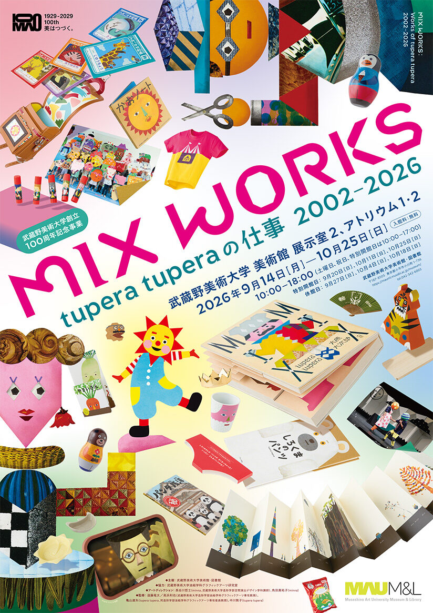
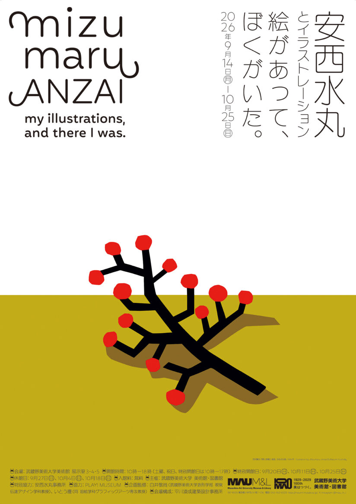
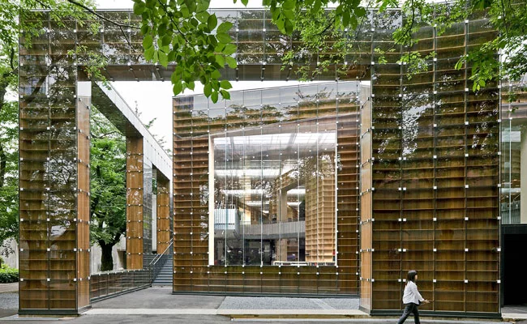
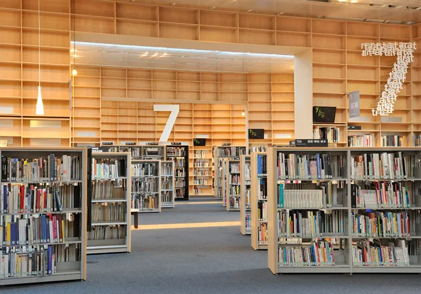
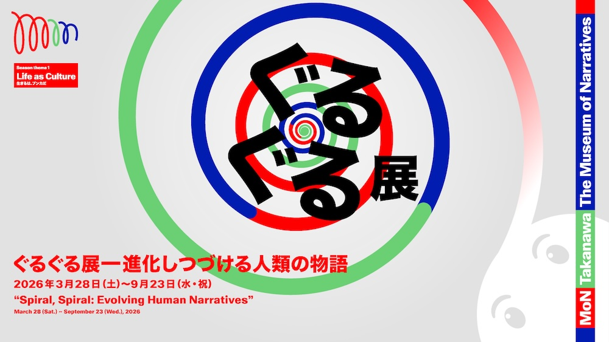
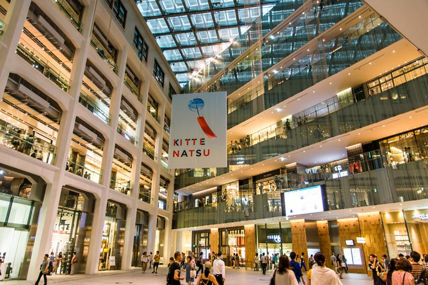
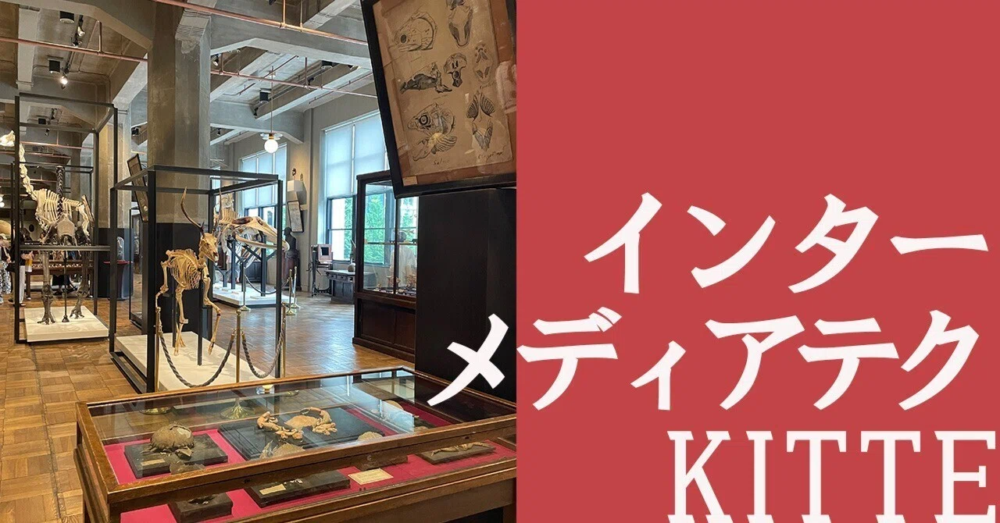

전체 지도
실제 위치 좌표로 그린 지도입니다. 검은 네모가 숙소, 굵은 선은 날짜별 이동 축이고, 방향을 잡기 쉽게 도쿄만·황거·요요기공원·야마노테선·도쿄타워를 함께 그렸습니다. 무사시노와 하네다만 빼면 전부 반경 5km 안입니다.
9/29 화 — 도착, 그리고 긴자
이동일이지만 오후를 통째로 긴자에 씁니다. 긴자는 기업이 문화 공간을 자기 브랜드의 얼굴로 운영하는 방식—DNP의 ggg, 폴라의 아넥스, 소니의 파크, 에르메스의 포럼—을 반나절 도보권 안에서 비교해볼 수 있는 동네입니다.
07:00 김포공항 집합, 09:00 출발, 11:20 하네다 T3 도착.
롯폰기 3초메. 히비야선·오에도선 롯폰기역 도보 5분, 아자부다이힐즈 도보 13분 — 이 위치 덕에 이번 일정 대부분이 환승 0–1회로 끝납니다. 체크인 전이니 짐만 맡기고 바로 점심으로. sotetsu-hotels.com

카이센동 한 그릇에 줄 서는 집. 웨이팅이 길면 도쿄 미드타운 식당가로 대체.
A. 긴자 자유 트랙
긴자 1초메에서 남쪽으로 내려오는 도보 코스로 순서를 잡았습니다. 가까운 곳끼리 묶으면서 마감 시간과도 맞아떨어지는 순서 — 입장 마감이 가장 빠른 폴라(18:30)에서 시작해 가장 늦게 닫는 츠타야(21:00)에서 끝납니다. 관심 없는 곳은 건너뛰어도 동선은 그대로 유지됩니다.

- 1폴라 뮤지엄 아넥스전시입장 18:30 마감 · 무료
기요카와 아사미 + 나와 코헤이 ‘보이지 않는 정원’ (9.16–11.8). 화장품 기업 폴라가 운영하는 무료 현대미술 갤러리. po-holdings.co.jp/m-annex
- 2
.jpg?width=300)
- 3긴자 메종 에르메스 르 포럼전시~19:00 · 무료
앤 베로니카 얀센스 ‘도쿄 긴자 4-1번지 5초메’ (9.11–2027.1.11). 렌조 피아노의 유리블록 건물 자체가 절반. 길 건너 소니 파크(수직 공원)도 바로 옆이라 잠깐 들르기 좋습니다. hermes.com/maison-ginza sonypark.com

- 4
- 5ggg 긴자 그래픽 갤러리전시~19:00
타나카 요시히사 ‘ARCHIVE / ACHIEVE’ (9.4–10.21). DNP가 1986년부터 운영하는 그래픽 전문관. dnpfcp.jp/gallery/ggg

- 6
B. 텐도목코 트랙
텐도목코 쇼룸(하마마쓰초) — 야나기 소리 버터플라이 스툴을 만든 성형합판 가구의 본가. 견학 예약제, 17:00까지, 화요일 정상 영업. 다이몬역에서 도보 3분이라 숙소에서 가장 빨리 닿는 트랙입니다. 관람 후 아사쿠사선 다이몬 → 히가시긴자 약 8분으로 이동해 16시대에 A트랙 코스에 합류 — 마감이 늦은 곳들(이토야·DSM·츠타야)은 그때부터도 충분히 돌 수 있습니다. tendo-mokko.co.jp
식사 후 귀가: 긴자 → 히비야선 → 롯폰기, 환승 없이 약 15분.
9/30 수 — 아자부다이힐즈, 무사시노
오전은 초고층 개발지의 몰입형 미디어아트, 오후는 교외 미대 캠퍼스. 같은 날에 두 극단을 붙여 놓은 이유가 있습니다—규모와 자본이 만드는 경험과, 아카이브와 교육이 만드는 경험을 하루 안에서 비교하게 됩니다.
예약 시간 엄수(재입장 불가). 신작 포함 75개 이상 작품군의 ‘지도가 없는 뮤지엄’. 작품 간 경계가 없어서 공간 연출과 인터랙션 설계를 뜯어보기 좋습니다. teamlab.art/e/tokyo
특별전 ‘우주의 비대칭성에 대하여’ (7.8–10.8) — Light Sculpture - Flow 공간 재개를 기념한 신작 시리즈 Asymmetric Existence·Chromatic Existence. 물질 표면 없이 빛의 흐름과 질서만으로 조각을 만든다는 개념 — 방문일이 회기 안에 들어갑니다. teamlab.art/concept/asymmetry-universe

아자부다이힐즈 갤러리 — 사카모토 류이치 + 다카타니 시로 ‘async–immersion / Ambient Kyoto–Tokyo’ (8.28–10.15). 사운드 중심 몰입형 설치. 오전 팀랩과 같은 ‘몰입’이라는 말이 얼마나 다른 결과가 되는지 비교해볼 것. azabudai-hills.com

파미마 파크 AZABUDAI — 가미야초역 쪽 신규 점포. NIGO 크리에이티브 디렉션, 원더월 가타야마 마사미치 설계. 편의점이라는 포맷의 브랜딩 실험. family.co.jp

입장 무료, 평일 18:00까지. 캠퍼스 정문에서 직선으로 보이는 위치. mauml.musabi.ac.jp
MIX WORKS — tupera tupera의 일 2002–2026 — 그림책 원화부터 무대미술, 생활용품 디렉션까지 약 500점. 한 유닛이 25년간 매체를 넘나든 방식 자체가 커리큘럼. mauml.musabi.ac.jp

안자이 미즈마루와 일러스트레이션 — 기증 원화 13,000점 중 엄선. 인쇄 문화 전성기의 일러스트레이션·북디자인. mauml.musabi.ac.jp

상설 — 근대 의자 컬렉션 — 명작 의자 400여 점을 실물로. 도판으로만 보던 의자의 실제 스케일 확인.
도서관 — 후지모토 소우 설계. 나선형 책장 벽이 곧 건물 구조. 서가 사이를 걸어볼 것.


숙소 앞에서 먹고 바로 해산하는 구조라 긴 이동 뒤에 부담이 없습니다.
10/1 목 — 타카나와, 그리고 각자의 오후
오전은 전원이 올해 3월 개관한 MoN Takanawa. 오후는 전공·관심사에 따라 네 갈래로 흩어졌다가, 저녁에 시부야 히카리에 d47 뮤지엄에서 다시 만나 함께 보고 식사합니다. 네즈미술관은 정원까지 제대로 보면 반나절이 걸리는 곳이라 독립 트랙으로 분리했습니다.
2026년 3월 개관. 구마 겐고가 외장을 맡은 나선형 저층 건물로, 지하 3층부터 옥상까지 전시·공연·다다미 공간이 경사로로 이어집니다. 11:00부터 자유탐방—옥상의 신사와 족욕 테라스까지 올라가 볼 것. 점심도 관내에서. montakanawa.jp

구루구루전 — 진화를 계속하는 인류의 이야기 — 개관 기념 전시. 전통 예능부터 만화·기술까지 장르를 섞는 이 관의 방향을 보여주는 전시. montakanawa.jp

시부야 히카리에 8층 d47 뮤지엄(18:30 기준)에서 다시 만나는 것으로 잡고, 각 트랙에서 역산해 움직입니다.
A. 네즈미술관 — 미술관·정원
- 네즈미술관 — 구마 겐고 설계. 대나무 진입로, 낮은 조도의 전시실, 도심에 숨겨진 정원까지. 제대로 보면 2–3시간이 걸려 독립 트랙으로 분리. 온라인 날짜·시간 지정 예약제(14:00–15:00 슬롯 권장, 변경·취소 불가, 입관 후엔 시간 제한 없음). 학생 요금(대학생 700엔~)은 학생증 필수 nezu-muse.or.jp

B. 아오야마 — 패션·서점·인쇄
- 14:00 요지 야마모토 아오야마 — 브랜드 세계관이 매장 건축까지 관통하는 예 yohjiyamamoto.co.jp
- 15:00 아오야마 북 센터 / Utrecht — 디자인서·독립출판 aoyamabc.jp utrecht.jp
- 16:00 아카이브 스토어 — 빈티지 의류 아카이브 archivestore.jp
- 17:00 파피에 라보 — 활판인쇄·종이 전문(진구마에 1초메, 하라주쿠역 북쪽. ~19시, 월·화 휴무) papierlabo.com

C. 하쓰다이 — 미디어아트
- NTT ICC — 1997년부터 이어진 미디어아트 전문 기관. 무료 존 포함, 18:00까지. 기술 기반 작품의 보존·전시 방식을 볼 수 있는 드문 곳 ntticc.or.jp

D. 노기자카 — 건축·가구
- 갤러리·마 — TOTO가 운영하는 건축 전문 갤러리. 건축 서점 병설 jp.toto.com/gallerma
- 카리모쿠 리서치 센터 — 목가구 브랜드의 리서치 전용 공간 karimoku.com
- HIDA 도쿄 미드타운점 — 히다 지역 목공 가구 hidasangyo.com

흩어졌던 하루를 여기서 다시 묶습니다. D&DEPARTMENT가 47개 도도부현의 디자인을 수집·전시하는 곳으로, ‘로컬 리서치를 전시로 만드는 법’의 교과서. 전시실 하나 규모라 30분이면 충분하고, 일찍 도착한 팀은 18:00부터 먼저 관람해도 됩니다. 같은 8층의 전망 공간에서 시부야 스크램블 교차로가 내려다보입니다 — 저녁 시간대라 교차로의 인파와 대형 스크린들이 가장 잘 보이는 때이기도 합니다. hikarie8.com/d47museum

귀가: 시부야→롯폰기는 지하철 직통이 없어서 도에이버스 도01(시부야역앞→신바시행)이 정답 — 롯폰기역앞 하차, 약 20분. 늦어지면 JR 에비스 → 히비야선 → 롯폰기.
10/2 금 — 롯폰기, 도쿄역, 귀국
마지막 날은 디자인 뮤지엄의 정석 코스. 특히 아티존의 소트사스전은 10/4 종료라 이 일정이 마지막 기회입니다.
미야케 잇세이·사토 타쿠·후카사와 나오토가 만들고 안도 다다오가 설계한 디자인 전문관. 지붕 한 장이 땅으로 접혀 들어가는 건물. 2121designsight.jp

‘호조키’에서 배우다 — 삶을 다시 엮는 작은 건축 (8.28–2027.1.11) — 가모노 초메이의 방장(方丈) 오두막을 출발점으로 ‘최소한의 건축’을 다시 묻는 기획전. 2121designsight.jp

구로카와 기쇼의 물결치는 유리 파사드. 자체 컬렉션이 없는 국립 아트센터라는 제도 실험이기도 합니다. 아트샵 SFT까지—건축과 샵 중심으로 짧게. nact.jp

브리지스톤 미술관을 2020년 전면 재개관한 사립관. artizon.museum

에토레 소트사스 — 디자인은 마법이 시작되는 곳에서 시작된다 (6.23–10.4) — 멤피스의 창시자. 올리베티 산업디자인부터 세라믹·유리까지. 이틀 뒤 폐막. artizon.museum

옛 도쿄중앙우체국을 리노베이션한 JP타워 2·3층. 도쿄대 학술표본을 박물관 그래픽과 집기 디자인으로 다시 짠 무료 상설관. 표본 진열장 하나하나가 전시디자인 레퍼런스. intermediatheque.jp


첫날의 역순 그대로: 롯폰기 → 오에도선 → 다이몬 → 도보 4분 하마마쓰초 → 도쿄 모노레일 → 하네다 T3. 약 40분, 환승 1회. 하마마쓰초 환승 통로가 캐리어 끌기에 무난하지만, 퇴근 시간대라 다이몬 구간이 붐빌 수 있으니 17:00 정시 출발을 지킬 것.
저녁은 공항에서. 19:55 출발, 22:15 김포 도착.
공통 메모
- 교통카드 — 첫날 하네다에서 Suica/PASMO(모바일 가능) 준비. 이 일정의 모든 대중교통을 카드 하나로 탑니다.
- 예약이 필요한 곳 — teamLab Borderless(시간 지정), 네즈미술관(온라인 날짜·시간 지정, A트랙 인원 확정 후 14:00–15:00 슬롯 구매), 텐도목코 쇼룸(견학 예약제). 모두 사전 확정 필수이며 네즈는 구매 후 변경·취소가 안 됩니다.
- 마감이 빠른 곳 — 폴라 뮤지엄 아넥스 입장 18:30, 텐도목코 17:00, ICC·무사비 미술관 18:00. 오후 동선은 이 시간부터 역산.
- 휴관 확인 — 무사비 미술관은 일·공휴일 휴관(9/30 수 정상), 텐도목코는 수요일 휴무라 화요일(9/29) 개인 방문으로 배치. 소트사스전은 10/4 종료.
- 도01 버스 — 시부야역앞과 롯폰기역앞을 직통으로 잇는 도에이버스. 시부야↔숙소는 지하철 직통이 없어서, 시부야 쪽 일정의 복귀는 이 버스가 가장 편합니다.
- 기준 역 — 모든 동선은 롯폰기역(히비야선 H04 · 오에도선 E23) 기준. 긴자·에비스 방면은 히비야선, 신주쿠와 다이몬(공항 모노레일 환승) 방면은 오에도선으로 기억하면 헷갈리지 않습니다.